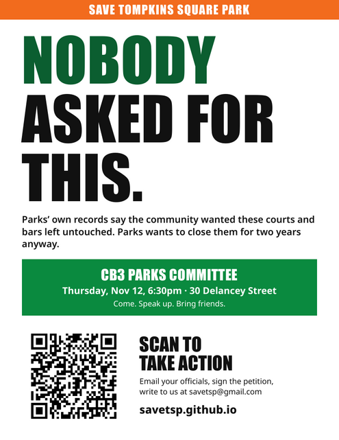
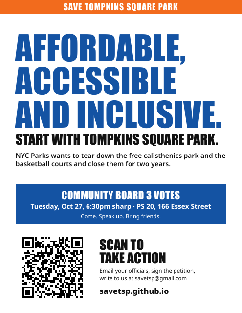

Resources
Rally your friends
Bring your friends, teammates and neighbors into the campaign. Ask them to email us at savetsp@gmail.com.
Post on social media
Use our hashtags, #SaveTSP and #RepairDontDemolish, so posts about the campaign can be found together. Here is a post you can copy, or write your own.
Print our posters
Put them up in your building, your shop or your window. Letter is 8.5 by 11 inches, for any home printer. Tabloid is 11 by 17 inches.



Make your own poster
Download our QR code and add it to your own poster or flyer. It links to this site.
← More things you can do